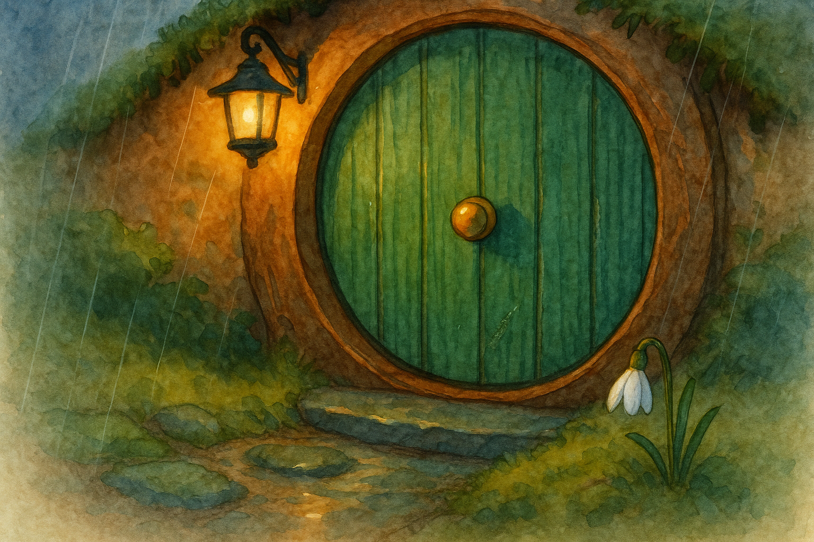

Fourth Age, in the Shire when the lanes are slick with rain and even good news wipes its feet
There are messages that arrive in letters, and messages that arrive in knocks. But there is a third sort—shier than either—which comes like a cat in the wet: without announcement, leaving only a mark to prove it ever stood at your door.
It began, as so many Shire matters do, with rain and breakfast.
The rain had been falling since midnight—patient, steady, and well-mannered. It did not storm; it did not shout. It simply went on making the world clean and dark and a trifle too honest. By morning, the hill-lanes shone like eel-skins, and the hedges dripped as though they had been over-watered by an enthusiastic gardener.
I had put the kettle on and set a loaf to cool, and I was doing that sensible thing which one does on wet days: deciding, for the third time, that one ought not to go out at all.
Then I saw it.
On the lower curve of my green door, just above the brass strip by the threshold, there was a scratch—no longer than a barley-straw, pale against the paint. It was not deep, but it was fresh. The wood showed through like a new tooth in a child’s grin.
Now, I keep good order. I do not say this to boast; it is simply a Baggins habit. If there is a mark on my door, I know whether I put it there. And I was very sure I had not.
I opened the door at once, for that is the only honest way to treat mysteries. The rain misted in and made the mat smell of wool and earth. The garden was empty. The path was empty. No footprints, unless you count the prints the rain makes, which is to say: a thousand, all alike.
I peered left and right, and then, because I am not quite as wise as I pretend, I stepped out onto the stones in my stocking-feet to look more closely at the threshold.
There, in the moss between two stones, lay a single snowdrop. It had no business being there at that season, and yet there it was: white as a clean cup, its head bowed as politely as any hobbit at a door.
I picked it up. The stem was damp and cold, as though it had been carried a long way in a pocket. And beneath the flower, tucked into the moss with careful fingers, was a thin strip of birch-bark, no wider than my thumb.
On the bark was only a mark—scratched in with the point of a knife or a nail: a small curved line, and a dot beneath it. It was not a letter, not in any hand I knew. It looked more like the way a bird would write, if birds ever learned to be brief.
I stood there, rain beading on my hair, holding a snowdrop and a piece of bark, and feeling as though my own door had just cleared its throat.
When I went back in, the kettle was singing—not its full whistle yet, but the soft, impatient simmer that says, Make up your mind. I set the birch-bark beside my cup and stared at it until the tea had gone too strong.
“A child’s trick,” I told myself. “A queer sort of note. Perhaps a neighbour trying to be poetic.”
But the scratch on the door said otherwise. It had been made by something hard and narrow, drawn upward with a certain hesitancy—as though the hand that made it did not wish to damage the paint, and yet had to leave some sign.
Late in the morning, when the rain thinned to a drizzle and the clouds lifted enough to show a pale strip of sky, I walked down to Bywater under my umbrella. Hobbits were about, as they always are, no matter the weather: someone carrying a basket with a cloth over it, someone else pretending the rain was not there by walking quickly. I asked, as lightly as I could, whether any folk had seen strangers on the Hill-lanes.
“Strangers?” said old Mr. Holman, who sees more than he admits. “None worth a tale. But there was a bird about, early. A big fellow, too. Came low over the hedges, like it was looking for a place to land.”
“A bird,” I said. “In this rain?”
He shrugged. “Some birds have business. I’ve always said so.”
On my way back, I took the long path by the Water. The banks were swollen, and the reeds trembled as the current pushed at them. A kingfisher flashed once—blue as a spilled ink-pot—and was gone, leaving the air emptier for having been so briefly bright.
At the bend where the willows lean down and touch their own reflections, I saw something that made me stop.
On a low branch, half-hidden by wet leaves, was another strip of birch-bark. It was caught there as neatly as a ribbon, and on it was the same mark: the curved line and the dot. Beneath it, stuck into the bark of the willow itself, was a small pale thorn—white and clean, as though washed.
I did not touch it. I only looked, and listened to the water, and thought of all the ways news can travel when it does not wish to be spoken aloud.
When I returned home, the scratch on my door seemed less like damage, and more like a sign left by a hurried guest: I came. I could not stay. I did not dare knock. But I needed you to know I had been here.
I took a little brush and, with the gentlest hand I could manage, touched paint over the pale wood—not to hide it, but to keep the door from drinking damp through the wound. Yet I did not paint it perfectly. I left it faintly visible, a hairline of lighter green in the right slant of lamplight.
For there is a lesson in scratches, if one is willing to learn it: doors are not only for shutting things out. They are also for noticing what comes near, and what goes away again without being asked in.
That evening, as the rain returned to its steady tapping and the hearth warmed the round room, I set the snowdrop in a small glass by the window. It bowed and bowed until it looked as though it might fall asleep standing up.
And before I turned in, I opened my green door once more and looked out into the dark, just in case the shy sort of message had grown brave enough to knock at last.
Nothing stood there—only the wet path, the breathing hedges, and the smell of clean earth. But when I shut the door, I fancied I heard, far off along the lane, a single bird-call—brief as a mark scratched in birch-bark; and for the first time all day, I did not feel alone in the weather.
— Bilbo